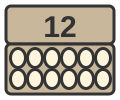

◉ mindstr
Czech word origins
1,295 Czech nouns, A1 to B2 · where each word comes from, as a mind map
pivo
Old Czech pivo←Proto-Slavic *pivo←*piti “to drink”
okno
Proto-Slavic *okъno←*oko “eye”=an “eye” in the wall

tucet
German Tutzet←Middle High German totzen←Old French dozaine